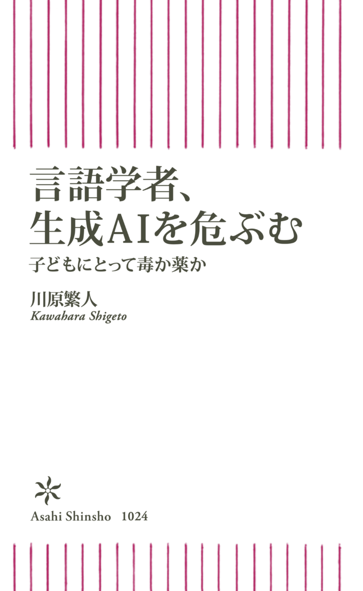
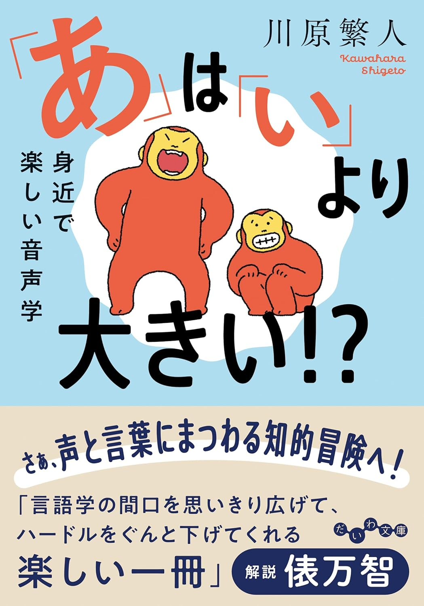
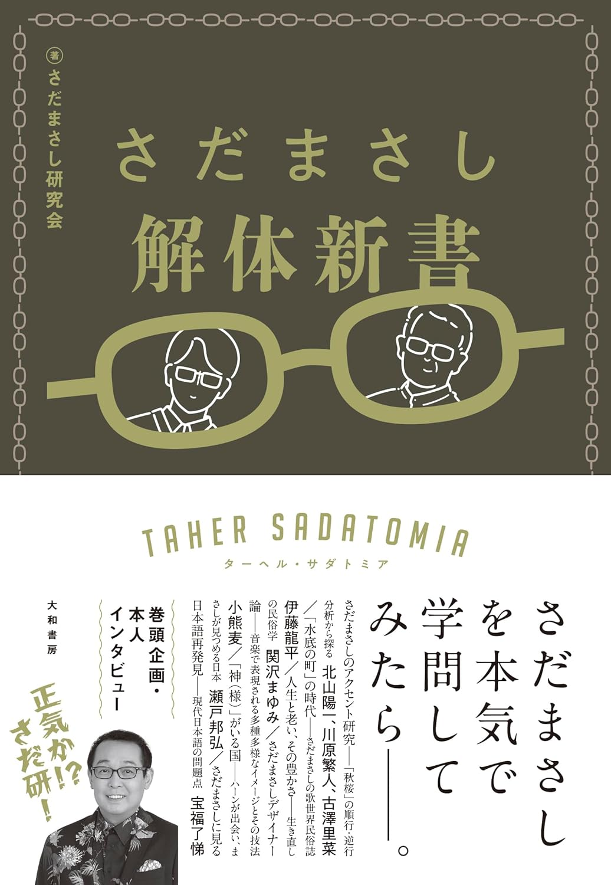
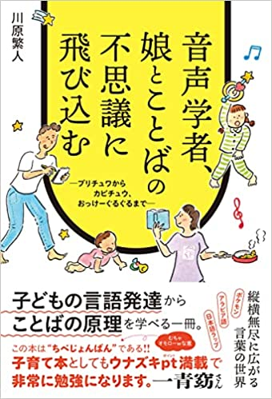
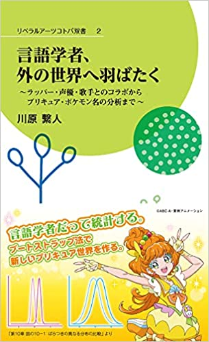
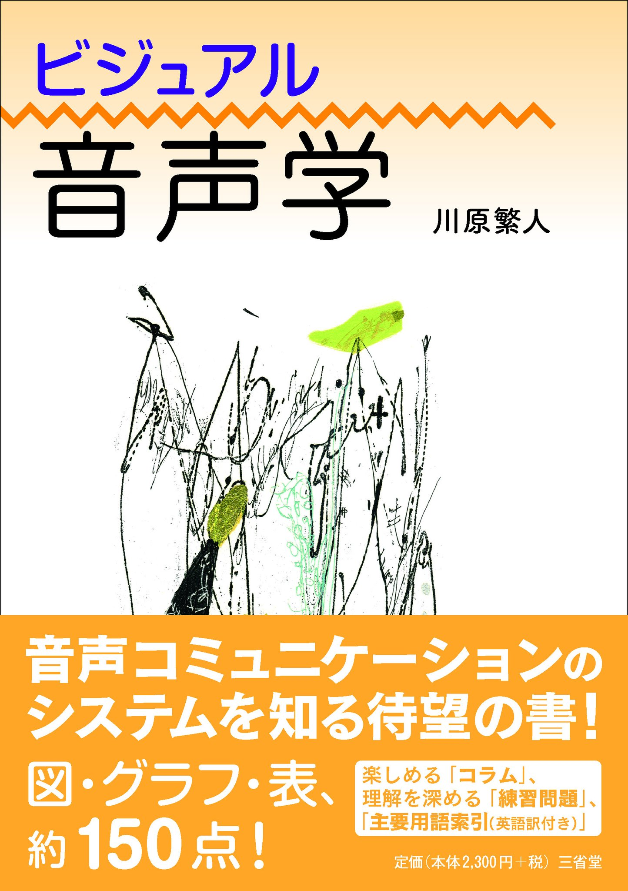
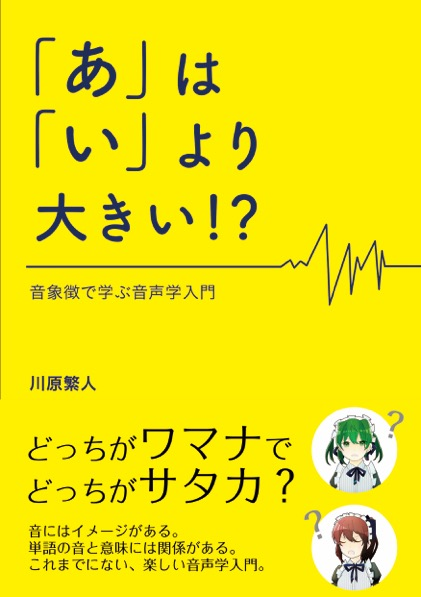

言語学者、生成AIを危ぶむ： 子供にとって毒か薬か. 朝日新書. 補足note記事.📖 著書一覧
今までに出版した書籍のまとめはこちらをご覧ください！
連絡先・略歴
〒108-8345
東京都港区三田2－15－45
慶應義塾大学
直通電話: 03-5427-1595
執筆・取材・メディア出演などの依頼はこちら：kawaharashigeto.info@gmail.com（マネージャー田中）。原稿料を頂いている著作物はPDFを公開できませんが、個別対応できる場合がありますので、マネージャーにご連絡ください。ただし、書籍のPDFはお送りできません。
略歴：
国際基督教大学 学士（教養、2002年）
マサチューセッツ大学 博士（言語学、2007年）
ジョージア大学言語学プログラム助教授（2007−2008）
ラトガーズ大学言語学科助教授（2008−2012）
慶應義塾大学言語文化研究所（2013−）
現職： 慶應言語文化研究所教授
ICU Linguistics理事
Phonology 編集者 （2021-）
エルディシュ数：4 (Kawahara <= Kingston <= Nichols <= Warnow <= Erdös)
ベーコン数：3（川原繁人 <= 上白石萌音 <= アラン・メンケン <= ケビン・ベーコン）
東京都港区三田2－15－45
慶應義塾大学
直通電話: 03-5427-1595
執筆・取材・メディア出演などの依頼はこちら：kawaharashigeto.info@gmail.com（マネージャー田中）。原稿料を頂いている著作物はPDFを公開できませんが、個別対応できる場合がありますので、マネージャーにご連絡ください。ただし、書籍のPDFはお送りできません。
略歴：
現職：
書籍サポートページまとめ
『言語学者、生成ＡＩを危ぶむ』（補足資料）
「声」の言語学入門: 私たちはいかに話し、歌うのか（読者サポートページ）
『絵本 うたうからだのふしぎ』（読者サポートページ）
『言語学的ラップの世界』（読者サポートページ）
『なぜ、おかしの名前はパピプペポが多いのか？』（読者サポートページ
『音声学者、娘とことばの不思議に飛び込む』読者サポートページ
『フリースタイル言語学』読者サポートページ
『言語学者、外の世界へ羽ばたく』補足事項
『ビジュアル音声学』補足事項・教材
『「あ」は「い」より大きい！？：音象徴で学ぶ音声学入門』補足事項・教材
『音とことばの不思議な世界』補足事項・教材
IPAカード遊び方解説
「声」の言語学入門: 私たちはいかに話し、歌うのか（読者サポートページ）
『絵本 うたうからだのふしぎ』（読者サポートページ）
『言語学的ラップの世界』（読者サポートページ）
『なぜ、おかしの名前はパピプペポが多いのか？』（読者サポートページ
『音声学者、娘とことばの不思議に飛び込む』読者サポートページ
『フリースタイル言語学』読者サポートページ
『言語学者、外の世界へ羽ばたく』補足事項
『ビジュアル音声学』補足事項・教材
『「あ」は「い」より大きい！？：音象徴で学ぶ音声学入門』補足事項・教材
『音とことばの不思議な世界』補足事項・教材
IPAカード遊び方解説
2026
川原繁人（2026）AI時代の研究不正について -- 短編フィクションを通じた考察. 慶應義塾大学言語文化研究所紀要 57: 175-192.【上記書籍の番外編です】.
川原繁人（2026）生成AIが研究不正を加速させる可能性について. 科学5月号(岩波):367- 370.
川原繁人・岩瀬央（2026）生成AIは研究不正をどこまで拒否するのか——倫理的ガードレールの実験的検証. 科学6月号(岩波):478-481.
川原繁人（2026）査読の機密性は守れるか: AI の「そそのかし」に関する実験報告. 科学8月号(岩波):655-658.
川原繁人（2026）実験音韻論研究に生成 AI を使用する場合に気をつけるべきこと . 日本音韻論学会発表スライド.
川原繁人・北山陽一・牧村久実・野村憲司 (2026) 調音動画教材のユニバーサルデザイ ン—人工内耳装用児への提供を起点として—. 日本音声学会予稿集.
勝村夏帆・川原繁人 (2026) 日本語における両唇音の唇歯音化について—恋愛リアリティー ショーを用いた探索的分析—. 日本音声学会予稿集.
（2026）上垣皓太郎と川原繁人の日本語偏愛談義. 『週間プレイボーイ』.
イヤホン音量の大切さに気付けるように…現代ビジネス.
【目で学ぶ発音の仕組み】日本語の発音をMRIで徹底解説（YouTube動画）
田口善弘・川原繁人（2025）【対談】拝啓、生成AIネイティブ世代へ（全五回）. 現代ビジネス.
川原繁人・折田奈甫・桃生朋子（2025) 子ども向け生成AI搭載おしゃべりアプリの危険性について：言語学的・心理学的・認知科学的観点から. 慶應義塾大学言語文化研究所紀要 56: 31-54.
川原繁人・竹田信子（2025）「子どもを使って“実験”していないか？」学者と臨床心理士が考える、生成AI時代に子どもをどう育てるか. AERAデジタル.
川原繁人・神門・kz（2025）【鼎談】日本語ラップはむしろ、やさしい（ほぼ日の学校、全三回）.
川原繁人・ANI（2025）お茶の時間. クロワッサン 1138号.
川原繁人・大山顕（2025）お茶の時間. クロワッサン 1137号.
「声」の言語学入門: 私たちはいかに話し、歌うのか. NHK新書.
秋田喜美・川原繁人・長塚全（2025）笑顔は音声を通して伝わるか：笑顔と唇歯音の効果について. PhonoFesta 2025.
（監修）タッチペンでまなべる！はじめてのひらがなずかん. 小学館.
川原繁人 (2025) 【インタビュー記事】：AIではなく人の声で育てたい――言語学者、川原繁人さん監修のタッチペンで学ぶ『ひらがなずかん』が新発売！
2024
川原繁人 (2024) 生成AIおしゃべりアプリは 子どもにとって薬か毒か. 文化庁・言語資源小委員会での発表資料.
川原繁人 (2024) 歌手や声優になりたい人必見、音声学者が教える”声”の秘密. コクリコ.
北山陽一・川原繁人 (2024) ゴスペラーズ北山が教える面接で「失敗」しない方法 慶應大教授と意気投合した「スゴい」体のしくみ. コクリコ.
北山陽一・川原繁人 (2024) ゴスペラーズ「北山陽一」がこっそり受けた、慶応大「音声学」授業のスゴイ中身…歌手が「声」を自由に操れるワケ. 現代ビジネス.
 川原繁人 （w/ 俵万智・Mummy-D・山寺宏一・川添愛）（2024) 『日本語の秘密〜言語学者、ことばの達人に会いにいく』. 講談社現代新書.
川原繁人 （w/ 俵万智・Mummy-D・山寺宏一・川添愛）（2024) 『日本語の秘密〜言語学者、ことばの達人に会いにいく』. 講談社現代新書.
川添愛・川原繁人・三木那由他 (2024) ChatGPTの発話の背後に人間はいるのか？ 群像online.
川原繁人 (2024) お菓子の名前には本当に「パピプペポ」が似合うのか？. 群像.
川原繁人 (2024) 経験がひらめきを産む. Numero 11月号.
川原繁人 (2024) 自分事としての、あまりに自分事としての哲学（書評 ：三木那由多『言葉の風景、哲学のレンズ』）. 群像.

川原繁人 (2024)「あ」は「い」より大きい！？ 身近で楽しい音声学. 大和書房. (2017年に出版された単行本の文庫版です。俵万智さんにより解説と書き下ろしのエッセイ付き">
川原繁人 (2024) ポケモンを使って空気力学を教える〜文理の垣根を超えた言語研究の魅力〜. 大阪保険医雑誌.
古澤里菜・浅野真菜・川原繁人（2024）城南海氏のこぶしの分布に関する考察：言語学的観点から. REPORTS of the Keio Institute of Cultural and Linguistic Studies 55: 49-64.
川原繁人（2024）音声学的瞑想のすゝめ.『同朋』

北山陽一・川原繁人・古澤里菜（2024) . さだまさしのアクセント研究〜「秋桜」の順行・逆行分析から探る. さだまさし解体新書 ターヘル・サダトミア. 大和書房.
（聞き手）話題の人：KREVA--ラップで日本語の可能性を探究.『三田評論 7月号』.
遠藤歩華・古澤里菜・鎌野慈人・川原繁人・Jason Shaw (2024) 日本語wh構文におけるアクセントの実現についての追実験. 日本音声学会予稿集.
2023
成田広樹 @ 川原繁人研究会「チョムスキーについてとことん語ろう！ . Voicy放送＠ヒトがつくることば⇄ことばがつくるヒト（音声のみ）：第一回、第二回、第三回。YouTube動画編第一回、第二回、第三回。
小学生活の4年間ささげた中学受験 「惨敗」が教えてくれたこと. 毎日新聞オンライン.
川原繫人 (2023) 日本語ラップは言語芸術だ！――韻における母音、子音、音節構造の役割. kotoba.
川原繫人 (2023) 「日本語ラップ」は高度な知的遊戯. Voice.
川原繫人 (2023) 【言語学者・川原繁人のTHE CHANGE】. 双葉社THECHANGE.
川原繁人・古澤里菜（2023）城南海の「こぶし」の音声学的特徴と音譜上の分布について：『アイツムギ』と『あなたに逢えてよかった』をもとに. REPORTS of the Keio Institute of Cultural and Linguistic Studies 54: 53-77.
川原繁人 (2023) 音声学者が答える日本語の「なぜなぜ？どうして？」 国際交流基金日本語国際センター.
川原繁人 (2023) 言語は変化していくもの。省かれていく日本語の未来 大丸松坂屋百貨店WEBメディア「F.I.N」.
2022


川原繁人 (2022)『音声学者、娘とことばの不思議に飛び込む～プリチュアからカピチュウ、おっけーぐるぐるまで～』. 朝日出版社. ISBN:978-4-255-01275-9. サポートページ.
川原繁人 (2022)『フリースタイル言語学』. 大和書房. サポートページ.
川原繁人 (2022)『言語学者、外の世界へ羽ばたく〜ラッパー・声優・歌手とのコラボからプリキュア・ポケモン名の分析まで〜』(リベラルアーツコトバ双書). 補足事項.
川原繁人×RHYMESTER (2022)【日本語ラップ論争は終了か？】言語学者 川原繁人×RHYMESTER Mummy-Dが日本語ラップの歴史を徹底解説
川原繁人 (2022) 言葉のプロの力でＪキャラの名前のヒミツに迫る特別企画!!. 『少年ジャンプ増刊号「ジャンプGIGA 2022 AUTUMN』.
川原繁人 (2022) 人ってどんなふうに言葉を覚えていくの？. 『母の友』.
川原繁人 (2022) 言語の多様性と向き合う〜『エリートと教養』の考察を通じて〜. 『ユリイカ』.
川原繁人 (2022) 言語芸術としての日本語ラップ〜その五つの理由〜. 『文學界』.
川原繁人 (2022) ことばという贈りもの. 『XD Magazine Vol.6』.
川原繁人 (2022)「声にだす言葉」. 雑誌『談』no.124. インタビュー.
川原繁人 (2022) 「言葉の中にある不思議に音でアプローチする音声学」. 慶應義塾大学季刊広報誌『塾』夏号. インタビュー.
川原繁人 (2022) プリキュアやポケモン 音声学で名前の秘密解明. 著者インタビュー. 週刊東洋経済. 10/1.
川原繁人 (2022)「言語学者とーちゃん、娘のお友達の名前を勝手に分析: ことばの迷い道」. 『月刊みんぱく』8月号.
「ウイルスに国境ない」コロナ情報、少数言語に翻訳 研究者ら協力. 朝日デジタル（取材協力）.
2021
川原繁人 (2021) ゴジラがコシラでない理由 面倒くさいと「強さ」に？ 朝日新聞デジタル.
川原繁人 (2021) 響きで印象、性格も変わる!? 名づけと音の関係、ミキハウス特集記事.
川原繁人 (2021) 強い「ゴ」やさしい「パ」『リレーおぴにおん 声を感じて1 朝日新 聞』 7月1日朝刊.
川原繁人 (2021) ポケモン名分析から迫る言語起源の謎. 『XD Magazine Vol.3』.
川原繁人 (2021) 『子供の科学』11月号。「なぜ？なぜ？どうして？」回答。質問：人間の声が違うのはなぜ？
川原繁人 (2021)「制約は想像の母である：日本語ラップと大学教育」. 慶應義塾大学アート・センター『ARTLET』55号.
川原繁人 (2021)「絵本のことば 言葉のえほん〜こどものとも」. 福音館書店.
川原繁人 (2021) 書評 ：グレッチェン・マカロック氏の『インターネットは言葉をどう変えたか デジタル時代の〈言語〉地図』（千葉敏生訳、フィルムアート社）. 『週刊読書人』.
鼎談 w/ 晋平太・関根和生（2021) ラップはビジネス、教育に役立つのか? 『教養としてのラップ入門』. 開発社.
対談 w/ 細馬宏通 (2021) からだとなまえとオノマトペー声がひらく「言語芸術」の地平. 早稲田文学春号 pp.70-97.
川原繁人 (2021) 音象徴と言語学ー教育と研究. 日本認知言語学会論文集 21: 489-491.
2020
 川原繁人・平田佐智子・桃生朋子（2020）IPAカード：楽しく学ぶ国際音声記号. 慶應義塾大学言語文化研究所.
川原繁人・平田佐智子・桃生朋子（2020）IPAカード：楽しく学ぶ国際音声記号. 慶應義塾大学言語文化研究所.
熊谷学而・川原繁人 (2020) 音象徴の抽象性:赤ちゃん用のオムツの名付けにおける唇音. 言語研究 157: 149-161.
川原繁人 (2020) プリキュア名と両唇音の音象徴 II: 実験的検証. 日本音声学会予稿集.
川原繁人・平田佐智子・桃生朋子（2020）IPAカード. REPORTS of the Keio Institute of Cultural and Linguistic Studies 51: 37-45.
2019
川原繁人 (2019) プリキュア名と両唇音の音象徴. 日本音声学会予稿集.
熊谷学而・川原繁人 (2019) 音節構造から生じる音象徴：赤ちゃん用オムツの名前の分析. 日本音声学会予稿集.
熊谷学而・川原繁人 (2019) ポケモン名付けにおける母音と有声阻害音効果: 実験と理論からアプローチ. 言語研究 155: 65-99.
川原繁人（2019）研究・社会・学生・家族. 三田評論11月号.
川原繁人 ・桃生朋子 (2019)「マイボイス」を使って音声学を教える有効性について：アンケート調査の報告. 音声研究 23(1): 22-25.
Zeebra × 川原繁人 (2019) 日本語ラップと言語感覚. 『mandala musica/マンダラ・ムジカ ― ―普遍学としての音楽へ』: .36-59（大人の事情で奥付は2018年3月）
2018

川原繁人 (2018) 『ビジュアル音声学』. 東京: 三省堂. 補足・教材.
川原繁人・高田三枝子・松浦年男・松井理直（2018） 有声性の研究はなぜ重要なのか. 音声研究 22(2): 56-68.
川原繁人 (2018) Science Column 3: なぜヒップホップのメッセージは胸を打つのか---１万分の１の奇跡がもたらす効果とは.『筋トレ×ヒップホップが最強のソリューションである』文響社.
川原繁人・桃生朋子 (2018) 音象徴で言語学を教える: 具体的成果の紹介を通して. Southern Review 32: 3-14.
桃生朋子・川原繁人 (2018) マイボイスと大学言語学教育. REPORTS of the Keio Institute of Cultural and Linguistic Studies 49: 97-107.
小林 ゆきの・磯部 美和・ 桃生 朋子・ 岡部 玲子・ 川原 繁人（2018) 幼児はポケモン名付けに音象徴を用いるか. 日本言語学会第155回全国大会予稿集.
2017

川原繁人 (2017) 『「あ」は「い」より大きい!?:音象徴で学ぶ音声学入門』. 東京: ひつじ書房. 補足・教材.
川原繁人 (2017) ドラゴンクエストの呪文における音象徴: 音声学の広がりを目指して. 音声研究 21(2): 38-42.
遠藤希美・川原繁人・皆川泰代 (2017) 声楽的発声における母音知覚—基本周波数および声楽経験の影響—. 音声研究 21(2): 25-37.
川原繁人・桃生朋子 (2017) 音象徴の言語学教育での有効利用に向けて: 『ウルトラマン』の怪獣名と音象徴. 音声研究 21(2): 43-49.
川原繁人 (2017) 日本語ラップの韻分析再考二〇一七――言語分析を通して韻を考える――. 日本語学 36(11): 2-12.
(2017) ポケモン✖️言語学：身近なものを科学する。慶應義塾大学塾生新聞.
川原繁人 ・三間英樹 (2017) 生成音韻論における連濁の理論的分析. 『連濁の研究』. 開拓社. pp. 95-128.
川原繁人 ・竹村亜希子 (2017) 連濁の心理言語学的研究. 『連濁の研究』. 開拓社. pp. 129-145.
熊谷学而・川原繁人 (2017) 音象徴の抽象性：赤ちゃん用オムツのネーミングにおける唇音. 音声学会第31回全国大会予稿集. pp.49-54.
熊谷学而・川原繁人 (2017) ポケモンのネーミングにおける母音と有声阻害音の効果. 日本言語学会第155回全国大会予稿集. pp.127-132.
川原繁人・川原睦人・熊井 規 (2017) 声道模型における共鳴の有限要素法解析. 音声学会第31回全国大会予稿集. pp. 67-72.
2016
川原繁人・荒井隆行・今関裕子・杉山由希子・本間武蔵・増田斐那子・松井理直・皆川泰代・吉村隆樹. 「マイボイス：難病患者様の失われる声を救う」2015年度日本音声学会学術研究奨励賞.
川原繁人・桃生朋子・皆川泰代 (2016) マイボイスと大学における音声学教育. 音声研究 20(3): 13-20.
川原繁人・本間武蔵・吉村隆樹・荒井隆行 (2016) マイボイス・プロジェクト—自分の声を大切に考えた人たちの物語—. 日本音響学会誌 72.10: 653-661. The English version, “MyVoice: Rescuing voices of ALS patients” Acoustical Science and Technology 37(5): 202-210.
川原繁人・桃生朋子・皆川泰代 (2016) マイボイスと大学における音声学教育. 音声学会全国大会予稿集.
川原繁人 (2016) 日本やアメリカにおける音声学教育. JMAC技術講演会予稿集.
松井理直・川原繁人・シャージェイソン (2016) EPG を用いた日本語歯茎促音の調音的特徴. 音声学会全国大会予稿集.
遠藤希望・川原繁人・皆川康代 (2016) 声楽的発声における母音知覚―基本周波数および声楽経験の影響―. 音声学会全国大会予稿集.
2015
 川原繁人 (2015) 「
川原繁人 (2015) 「
川原繁人・本間武蔵・今関祐子・吉村隆樹・荻原萌・深澤はるか・増田斐那子・篠原和子・杉岡洋子・杉山由希子 (2015) マイボイス:言語学が失われる声を救うために. 日本音韻論学会 (編) 音韻研究 18. 東京：開拓社. pp.127-136.
川原繁人・竹村亜希子 (2015) 連濁は音韻理論の問題か. 西原哲雄 (編) 現代の形態論と音声学・音韻論の視点と論点. 開拓社. pp. 212-235.
2014
川原繁人 (2014) 強調形に現れる促音と有声性．日本音声学会全国大会ワークショップ予稿集 「有声促音の音声学的諸問題:地域変異と発話スタイルを中心に」．
篠原和子・川原繁人・本間武蔵 (2014) 身体としての言語 第28回人口知能学会全国大会. 2D5-OS-28b-3.
2013
Brent Berlin (2013) 動物名称にみられる共感覚的音象徴. 訳, 篠原和子・川原繁人. 篠原和子・宇野良子 (編) オノマトペ研究の射程ー近づく音と意味。pp. 17-42. ひつじ書房：東京。(若干のミスがありますので、 出版版を公開しますが、是非ご購入もご検討ください。）
篠原和子・川原繁人 (2013) 音象徴の言語普遍性：「大きさのイメージをもとに. 篠原和子・宇野良子 (編) オノマトペ研究の射程ー近づく音と意味。pp. 43-57. ひつじ書房：東京。(若干のミスがありますので、 出版版を公開しますが、是非ご購入もご検討ください。）
川原繁人 (2013) 日本語特殊拍の音響と知覚ー促音を中心としてー日本音響学会誌. 69(04): 191-196.